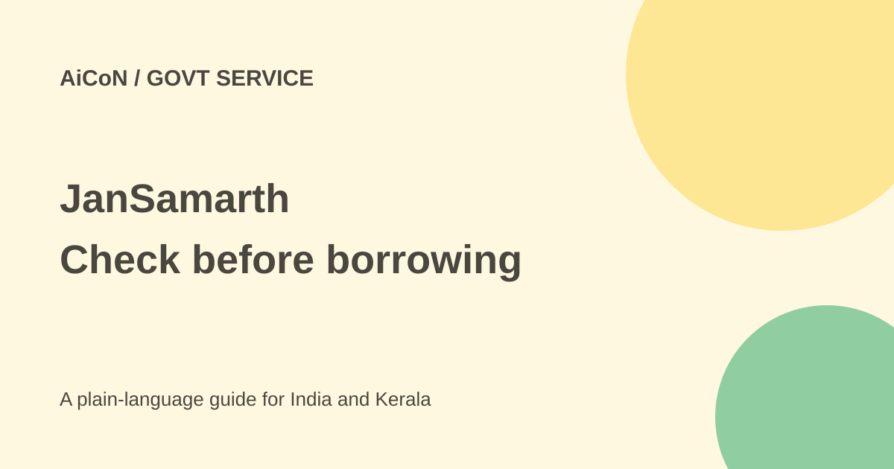

JanSamarth: find a government-linked loan that fits
JanSamarth helps people check eligibility for government-linked credit schemes and apply online. It is a loan portal, not a promise of free government cash.

What is JanSamarth?
JanSamarth is a national digital portal for credit-linked government schemes. The Department of Financial Services describes it as a marketplace connecting applicants with lenders and government schemes. It covers areas such as agriculture, business, livelihood, housing and renewable energy.
The current department page lists 15 schemes and about 250 lenders. The portal's own explanatory copy still says 14 schemes, and its category counts are inconsistent across sections. Use the current scheme choices shown during your application rather than treating a headline count as a complete catalogue. These differing counts do not mean that every applicant qualifies for every scheme.
A loan is not a free cash grant
A scheme may offer support such as a subsidy or credit guarantee, but the loan itself can require repayment, interest and other charges. Eligibility screening is not a guarantee of final approval or disbursal. The selected lender applies the scheme's rules and its credit assessment.
Before accepting an offer, ask for the loan amount, annual interest rate, repayment period, instalment amount, processing and other fees, collateral requirements, late charges and any conditions attached to a subsidy. Do not borrow merely because the application is online or government-linked.
How to check and apply
- Open the official JanSamarth portal. Choose the loan category matching the real purpose of your borrowing.
- Answer the eligibility questions accurately. Review the scheme that the portal suggests and its separate rules.
- If suitable, follow registration and application steps. Gather the documents required for that scheme rather than copying an unrelated applicant's list.
- Review the information and any consent for digital checks before submission. Do not let an agent invent income, business details or eligibility facts.
- Compare available lender offers and their full repayment terms. Digital approval language does not remove the need to read conditions.
- After applying, sign in and use My Applications on the dashboard to check status. Keep the application reference.
- If the status or requested documents are unclear, ask the selected lender or official portal support.
Documents, checks and costs
The portal FAQ says documentation differs by scheme and gives Aadhaar, voter ID, PAN and bank statements as examples. They are not all mandatory in every case. The department describes integrations for identity, income, credit bureau, business registration, bank verification and other digital checks. Read the consent screens and supply only your genuine information.
The sources checked do not establish one universal loan rate or one all-in fee for every scheme. Confirm charges with the chosen lender. Any separate paid help from an intermediary is not a government guarantee. Never pay someone who promises certain approval.
For Kerala applicants
A farmer, small business owner, street vendor or household planning rooftop solar can use the portal to explore a relevant credit route. Availability still depends on the scheme and lender. If online forms are difficult, the department says assisted submission through bank business correspondents is also supported. Confirm the person's bank identity before handing over documents.
Never disclose an OTP, UPI PIN or banking password to a person claiming to release a loan. Compare the monthly repayment against reliable income, including weaker months. Subsidy expectations should not be your only repayment plan.
What changed since the original post?
The 1 October post correctly called JanSamarth a loan portal rather than free government cash. This guide adds lender and repayment checks, digital-consent cautions and the current disagreement between official scheme counts. It does not turn eligibility into guaranteed approval.
Frequently asked questions
Can anyone get a loan?
No. Applicants must meet the chosen scheme's eligibility and lender checks.
Is the suggested scheme automatically approved?
No. Screening, approval and disbursal are different steps.
Where do I see application status?
Sign in and check My Applications, as described by the official FAQ.
Was an application submitted for this guide?
No. This is a source-based guide, not an application or eligibility decision for a particular person.
Sources: Official portal · Department of Financial Services. Checked 7 October 2026.